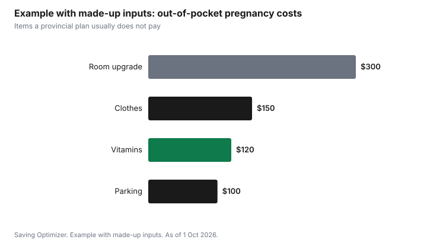

Kids · Canada
Pregnancy Costs in Canada: What Provincial Health Plans Cover and What You Pay

In Canada, provincial and territorial health plans generally cover medically necessary pregnancy care: prenatal visits with a physician (and a midwife where midwifery is publicly funded), ordered tests and ultrasounds, and a hospital birth. Families often pay for extras: private or semi-private room upgrades, keepsake ultrasounds, prenatal classes, vitamins, parking, a doula and baby gear. The biggest cost is often the income gap during leave; EI maternity benefits pay up to 15 weeks at 55% of average insurable earnings, to a maximum of $729 a week in 2026.
Key takeaways
- Covered: medically necessary prenatal care, ordered tests and ultrasounds, hospital birth. Midwife care is publicly funded in many provinces; check yours.
- Often paid by you: room upgrades, keepsake ultrasounds, classes, vitamins, parking, doulas, gear.
- Check workplace or spouse's benefits for room upgrades, prescriptions and paramedical services.
- New to a province? Check for coverage waiting periods and whether you need private insurance in the gap.
- EI maternity: up to 15 weeks at 55%, maximum $729 a week in 2026. Parental benefits follow.
What provincial plans generally cover
| Item | Generally covered? | Notes |
|---|---|---|
| Prenatal visits with a physician | Yes | Family doctor or obstetrician |
| Midwife care | Publicly funded in many provinces | Availability and waitlists vary |
| Medically necessary ultrasounds and lab tests | Yes, when ordered | Some screening tests may have conditions; ask your provider |
| Hospital birth (standard ward) | Yes | Room upgrades usually extra |
| Private or semi-private room | Usually no | Workplace benefits sometimes pay |
| Keepsake or 3D ultrasounds | No | Elective |
| Prenatal vitamins | Usually no | Some drug plans cover prescribed products |
| Prenatal classes | Varies | Some public health units offer free classes or online courses |
| Doula | Usually no | Check benefits and local programs |
Costs families often pay
- Prenatal vitamins and over-the-counter items.
- Hospital parking during appointments and the birth.
- Maternity clothes; secondhand and borrowed items lower this.
- Room upgrades at the hospital.
- Baby gear: car seat, safe sleep space, stroller. See secondhand safety rules before buying used.
- Travel for appointments if you live far from care.
Benefits and insurance to check
Workplace and spouse's health benefits may cover prescriptions, room upgrades, paramedical services or a doula. Read the plan booklet early. If you are new to a province or to Canada, check your provincial plan's waiting period rules; some provinces cover pregnancy differently for newcomers, and private insurance may be needed in the gap. Ask your province's health ministry.
The income gap: EI maternity and parental benefits
EI maternity benefits are available to the person who is pregnant or recently gave birth: up to 15 weeks at 55% of average insurable weekly earnings, up to a maximum of $729 a week in 2026. Parental benefits follow, in a standard or extended option. Quebec residents use the Quebec Parental Insurance Plan instead. Some employers top up benefits; ask HR.
Step by step: a pregnancy money plan
- Confirm your provincial or territorial health coverage is active and your health card is valid.
- Read your workplace benefits booklet (and your partner's) for prescriptions, room upgrades, paramedical services and parental leave top-ups.
- Ask HR about the employer's leave policy, top-up, and how to request leave in writing; provincial employment standards set the notice rules.
- Estimate EI income: 55% of average insurable weekly earnings up to the maximum, then compare it with your monthly costs.
- Choose standard or extended parental benefits, and decide how parents will share them.
- Build a list of baby gear, mark what can be borrowed or bought used safely, and buy a new car seat or check a used one's history and expiry.
- After the birth, register the birth and apply for the Canada Child Benefit; in most provinces you can consent to apply during birth registration.
EI and QPIP at a glance
| Benefit | Length | Rate |
|---|---|---|
| Maternity | Up to 15 weeks | 55% of average insurable weekly earnings, up to $729 a week in 2026 |
| Standard parental | Up to 35 weeks for one parent; up to 40 weeks when shared | 55%, up to the weekly maximum |
| Extended parental | Up to 61 weeks for one parent; up to 69 weeks when shared | 33% |
Quebec residents apply to the Quebec Parental Insurance Plan, which has its own options and rates. Self-employed people outside Quebec can opt into EI special benefits, but must register in advance; check the waiting rules.
Tax and benefits to remember
- Medical expenses not covered by a plan, such as some prescriptions or travel for care in specific situations, may qualify for the medical expense tax credit; keep receipts.
- The Canada Child Benefit starts after the birth is registered and you apply; provincial child benefits are often paid with it.
- Prenatal and postnatal vitamins and over-the-counter items are usually not eligible medical expenses unless prescribed; check CRA's list.
- Your income drops on leave, which can raise benefits that depend on family net income in the following benefit year.
Common mistakes
- Waiting until late pregnancy to read the benefits booklet, after a room upgrade decision.
- Assuming EI pays your full salary; check the 55% rate and the weekly maximum.
- Missing the window to choose standard or extended parental benefits; the choice cannot be changed once benefits are paid.
- Buying every item new when many can be borrowed or bought used safely.
Example with made-up inputs: a pregnancy budget
These numbers are an example with made-up inputs, not real prices.
| Item | Cost |
|---|---|
| Vitamins | $120 |
| Parking | $100 |
| Clothes (mostly secondhand) | $150 |
| Room upgrade (no benefits coverage) | $300 |
| Total | $670 |

Sources
- Provincial and territorial health plans, coverage of pregnancy and birth, as of 1 Oct 2026. Coverage details vary by province; check your health ministry.
- Government of Canada, EI maternity and parental benefits, as of 1 Oct 2026. Up to 15 weeks of maternity benefits at 55%, maximum $729 a week in 2026.
- Government of Canada, EI parental benefits: standard up to 35 weeks (40 shared) at 55%; extended up to 61 weeks (69 shared) at 33%, as of 1 Oct 2026.
- CRA, Canada Child Benefit: how to apply, including during birth registration, as of 1 Oct 2026.
- The costs in the example table and chart are made-up inputs.
Frequently asked questions
Is pregnancy care free in Canada?
Medically necessary prenatal care, ordered tests and ultrasounds, and a hospital birth are generally covered by provincial and territorial health plans for eligible residents. Extras such as room upgrades and keepsake ultrasounds are not.
Is a midwife covered in Canada?
Midwife care is publicly funded in many provinces and territories. Availability varies, so check with your province and register early.
What pregnancy costs do I pay myself?
Common out-of-pocket costs include vitamins, parking, maternity clothes, room upgrades, keepsake ultrasounds, doulas and baby gear. Workplace benefits may cover some.
How much is EI maternity in 2026?
EI maternity pays up to 15 weeks at 55% of average insurable weekly earnings, to a maximum of $729 a week in 2026. Quebec residents use the QPIP instead.
What if I am new to a province?
Check your provincial plan for waiting periods and newcomer rules, and consider private insurance for any gap.
What is the difference between standard and extended parental benefits?
Standard parental pays 55% for up to 35 weeks for one parent (40 shared). Extended pays 33% for up to 61 weeks for one parent (69 shared). The total is spread over a different length of time.
When do I apply for the Canada Child Benefit?
After the birth. In most provinces, you can consent to apply during birth registration; otherwise apply through CRA My Account.
Researched and drafted with AI assistance and fact-checked against official Canadian sources. How we create content.
Disclosure: Health services and products are described as types; none is named or ranked. Saving Optimizer may earn a commission if a partner link is added later; no partnership is claimed. Education only. This is not medical or insurance advice.